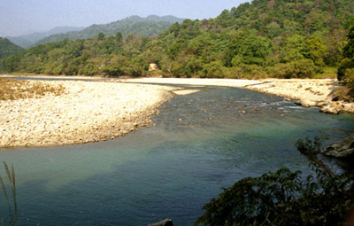
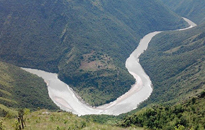

The glistening rivers in Uttarakhand that come majorly from the imposing glaciers make the state appear even more stunning as well as sacred. Uttarakhand is said to be the land of two most holy rivers in India, Ganga and Yamuna both have their origin points reckoned to be sacred most in the country. River Ganga which is a synonym for life and cleansing of sin is the most famous stream that Uttarakhand is proud to be the progenitor of. Other famous rivers in the state include Yamuna, Bhagirathi and many other tributaries and distributaries
Ganga
Ganga River is the most sacred river in Hindu religion. Ganga has been a symbol of divinity, spirituality, purity and moksha. Swami Vivekananda said, “Paris is the fountain-head of European civilization, as Gomukh is of the Ganga. Ganga finds mention in numerous ancient texts; she is a mother, a goddess, a life-giving river and a repository of people’s beliefs.
In Northern India, it is a major river on whose banks civilizations have been established since time immemorial. The mighty river embarks on its 2,525 km (approx.) journey from the Garhwal Himalayas, Uttarakhand. Merging and gushing from one area to another, the river ultimately drains into the Bay of Bengal. The life-giving river passes through Uttar Pradesh, Bihar and West Bengal before meeting the sea in Bangladesh.
There are many streams which come together to form Ganga. Bhagirathi and Alaknanda are two of the most famous tributaries of Ganga.
Yamuna
Yamuna originates from Yamunotri glacier which lies at the height of 6,315 metres. The glacier is situated against a steep slope, a little below the Peak of Kalind Parbat (mountain) in Uttarakhand. Meltwater of Yamunotri glacier gathers at Saptarishi Kund from where the downward travel of the river commences. Her
reference as a river and as a goddess has been found in the various historical and ancient texts.
Yamuna River passes through Uttarakhand, Haryana, New Delhi and Uttar Pradesh. It is in Uttar Pradesh that it merges with Ganga at the Triveni Sangam.
Bhagirathi
Bhagirathi River is the main source of the River Ganga. The river originates from the Gaumukh. The river has a length of 205 km.
Alaknanda
The River is the one of the two mainstream of holy river Ganga. The confluence of Satopanth Glacier and Bhagirathi Kharak Glacier are the source of Alaknanda.
Ramganga

Ramganga is the part of the Ganga system. The river flows from the Dun valley of the Corbett National Park and joins Ganga near Kannauj in Uttarpradesh.
Kali

The largest river in the Kumaon region, Kali River is also known as “Sharda River”, “Kutyangdi”, or Mahakali River. The river comes under the district of Pithoragarh and has a length of 184 km.
Tons
The Tons River flows through the Garhwal region. Supin and Rupin are the two streams which give birth to river Tons. The merger of these two near Naitwar gives birth to Tons River.